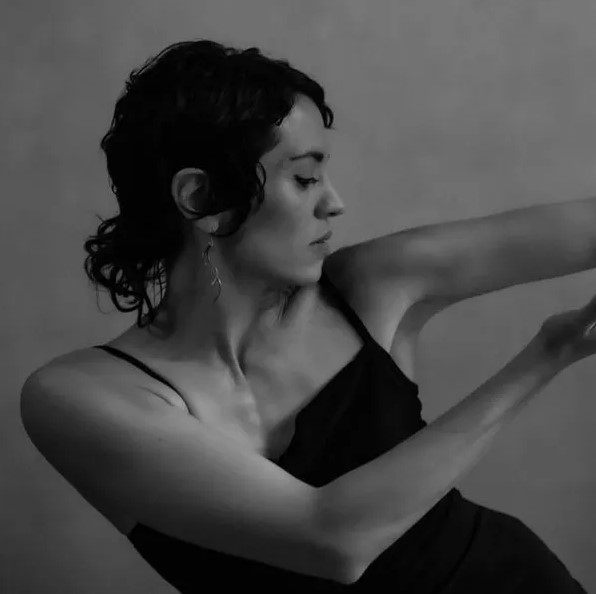
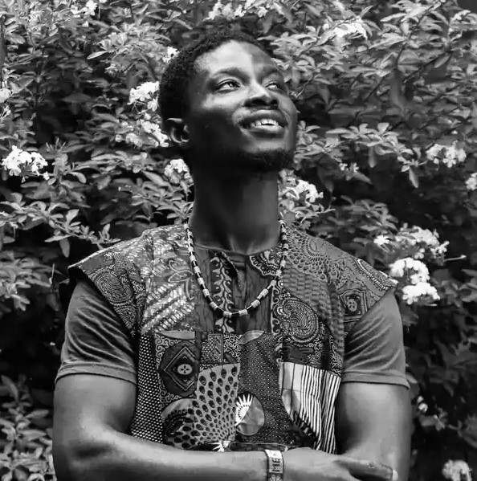
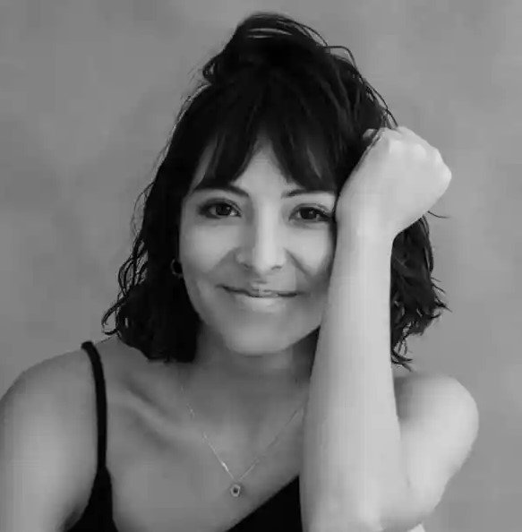
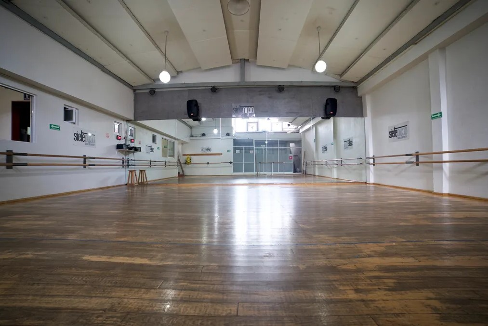
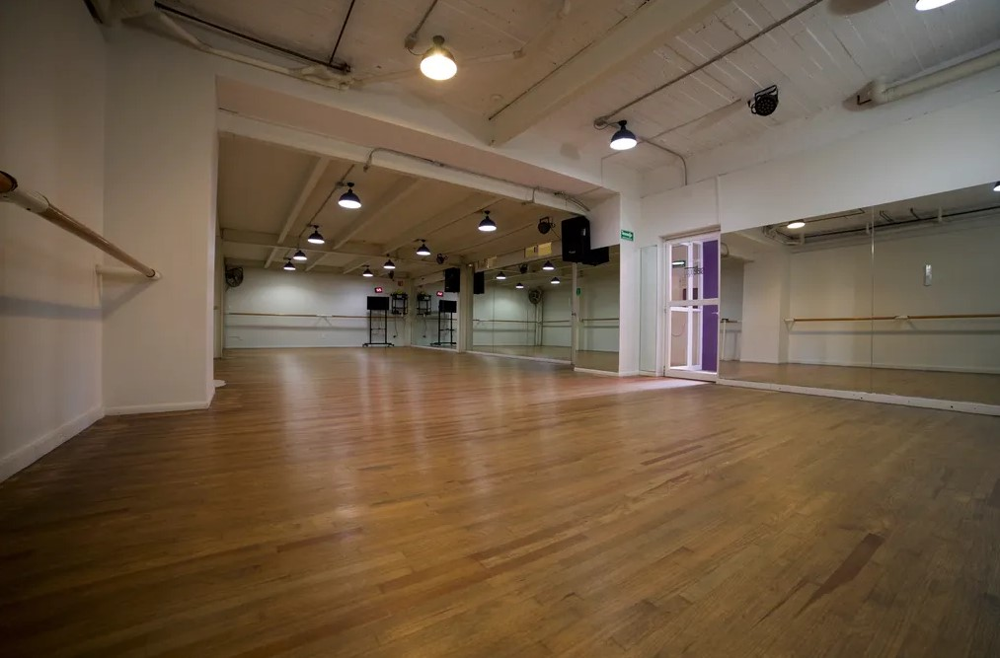

Víctor Cervantes
TÉCNICA CLÁSICA
Víctor Cervantes
TÉCNICA CLÁSICA
Realizó sus estudios profesionales en la Academia de la Danza Mexicana del INBA como intérprete de danza de concierto. Fue integrante de la Compañía de Tango y Folklor Latinoamericano Dancer‘s of The America en la ciudad de New York. Fue miembro de la Compañía Nacional de Danza (México) por un lapso de 13 años. Fue coordinador del taller experimental de la Compañía Nacional de Danza. Ha participado en musicales de New York como All that tango y Swango the fusion. Como coreógrafo y productor ha realizado puestas en escena como Living Brodway el Musical, Tiempos de tango, C&D Fest, Festival AVIV, Tentaciones tango, Navidad en México, Profundo tango y Carmen para diversas compañías dentro y fuera del país. En 2012 recibió la medalla de Bellas Artes reconociendo sus 10 años de labor artística.
TÉCNICA CLÁSICA

Bailarina multidisciplinaria con especialidad en Danza Clásica. Concluyó la carrera de bailarina ejecutante de Danza Clásica en la Escuela Nacional de Danza Clásica y Contemporánea. Obtuvo el primer lugar de su categoría en el Tercer Concurso Nacional de Ballet Infantil y Juvenil y compartió funciones con Le Jeune Ballet du Québec en Montreal. Se integró a la Compañía Nacional de Danza, donde interpretó durante cinco años papeles como cuatro cisnes, flautas de azúcar, dama de bodas, solista de sílfides, copos de nieve, así como coreografías de Mark Godden, George Balanchine, Nellie Hapee entre otros. Tomó clases junto a Vladimir Malakhov y Polina Semiónova en el Staatsballett Berlin. Colaboró con Anima Inc. Participando en el segmento de danza aérea para la inauguración de los juegos Panamericanos, más adelante se integró a la compañía de teatro y danza aérea Humanicorp, desempeñando actos en diferentes elementos aéreos y piso e impartiendo clases de ballet como entrenamiento a la compañía. Beneficiaria del programa Creadores Escénicos 2020-2021, perteneciente al Sistema de Apoyos a la creación y Proyectos Culturales (Fonca).

Kaman
AFRICANO
Bailarín, percusionista y acróbata originario de Guinea. Nació y creció en una familia de artistas y se formó en distintos ballets folklóricos a lado de grandes maestros de las artes de su país Guinea. Tiene al rededor de 10 años de experiencia en la impartición de clases. Radica en México desde el 2023.
TAP

Actriz, bailarina de tap y percusionista corporal egresada del Centro Universitario de Teatro. Como bailarina de Tap se ha formado con maestros como Alexander MacDonald en Steps of Broadway y en Broadway Dance Center con Darío Natarelli. También ha sido parte del Tap Music Project en México y Mérida de Sarah Reich. Ha trabajado con directores como Lorena Maza, Mario Espinosa, Emma Dib, Valeria Fabbri, Clarissa Malheiros, David Gaitán, Mariana Gándara, Khalid Freeman, entre otros. Cofundó la compañía Tribu Teatro con la obra “El Coro”, ganadora del FITU 2016, ganadora del Grand Prix du Festival des Ecoles Supérieures d’ Art Dramatique de Marruecos en 2017, ganadora del Sharm el Sheikh International Theater Festival for Youth en Egipto, 2018 y con diversas temporadas en la Ciudad de México. En 2019 fue parte del circo cabaret ALL STAR U.S.A Entertainment dando funciones ininterrumpidas durante 6 meses en Turquía. Ganadora del premio Mejor actriz con la obra “El mundo es una planta carnívora” dentro del festival Cairo International Monodrama Festival” 2021 y Best Physical Theater en el United Solo Festival 2023 en Nueva York.

Salón 1
Salón 2
regresar a la pagina principal
Jennifer Zapata Hernández (22110950@cobachih.edu.mx)